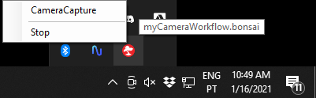

Command Line Interface (CLI)
The Bonsai command-line interface makes it possible to interface with Bonsai directly from the operating system terminal. Using the CLI you can open files, set workflow properties, change the editor scale, run a workflow in application mode, or even export a workflow as a bitmap or vector graphics file.
Quick Start
Open a command prompt or system terminal, navigate to the location where Bonsai is installed (usually at %LOCALAPPDATA%\Bonsai), and run Bonsai:
cd <bonsai installation directory>
bonsai
If you add the Bonsai folder to your system PATH you can simply type:
bonsai
This command will launch Bonsai in editor mode.
Opening a Workflow
To open an existing workflow simply type the name of the workflow file (e.g., workflow.bonsai):
bonsai workflow.bonsai
bonsai "C:\Users\User\Desktop\Example\workflow.bonsai"
Starting a Workflow
Additional flags can change the output behavior of the Bonsai CLI. For instance, to start a workflow from the command line we add the --start flag to the previous command.
bonsai workflow.bonsai --start
Starting a Workflow in Application Mode
You can also start a workflow as an application, without editor support:
bonsai workflow.bonsai --no-editor
This will start the workflow and block until the workflow terminates. Any active visualizers specified in the .layout file will also be displayed immediately. A Bonsai icon will be added to the system tray, which can be right-clicked to stop the workflow or open other visualizers.
Warning
Only visualizers which have been explicitly assigned in the workflow will be visible in the system tray icon.
Application mode is useful for batch processing, interop with other languages and scripting tools, or for deploying self-contained user interfaces for running experiments.

Tip
You can pipe the standard output of a workflow running in application mode to other processes, or to a file:
bonsai workflow.bonsai --no-editor > output.txt
Values can be written to the standard output using the WriteLine operator.
Passing parameter values to workflows
One of the most useful features of the CLI is the ability to set property values of operators in the workflow before running. Only externalized properties can be set in this way from the command line.
bonsai workflow.bonsai -p <propertyName>=<string>
You can also set properties in nested workflows by using the . (dot) notation:
bonsai workflow.bonsai -p <NestedNodeName.propertyName>=<string>
Tip
The same workflow file can be started in parallel with different parameters, allowing easy creation of configurable batch-processing pipelines.
Set a single property
bonsai workflow.bonsai --start -p intProperty=100
Set two distinct properties
bonsai workflow.bonsai --start -p intProperty=100 -p doubleProperty=4.2
Set properties in application mode
bonsai workflow.bonsai --no-editor -p intProperty=100 -p doubleProperty=4.2
Set a property of a nested workflow node
bonsai workflow.bonsai --no-editor -p intProperty=100 -p NestedNode.FlipMode="Horizontal"
Warning
The text representing property values needs to be convertible to the type of value stored in the property. As a rule of thumb, if you can write the property as a string in the editor, you can write that same string to set the same value in the CLI.
Specifying layout files in Application Mode
You can specify the layout file with which to start the workflow in Application Mode. This is especially useful when the same workflow is meant to be run several times in parallel, e.g. multiple identical behavior rigs where each rig visualizer should be in its own position.
bonsai workflow.bonsai --no-editor --visualizer-layout layout1.bonsai.layout
Tip
To generate multiple layouts for a given workflow:
- Start the workflow in editor mode.
- Arrange the visualizers in the desired layout.
- Save the workflow.
A
.bonsai.layoutfile with the same name as the workflow will be created. Rename the layout file so it is not overwritten by future save operations and pass the renamed file to the--visualizer-layoutoption.
Advanced CLI options
There are several additional CLI options that can be used to configure different settings in the editor or automate existing functions.
| Argument | Description |
|---|---|
--lib <dir> |
Add folder to the list of directories to be scanned for extensions. |
--editor-scale <scale> |
Sets the scale of the editor UI. Default value is 1. |
--start-no-debug |
Start the workflow without debugging. |
--debug-scripts |
Compile local extensions with debug symbols. |
--no-boot |
Launches Bonsai without the bootstrapper process. |
--package-manager |
Opens the Bonsai package manager. |
--gallery |
Opens the Bonsai workflow gallery. |
--export-package |
Start the export dialog for the specified workflow. |
--export-image <file> |
Export the specified workflow as a raster or vector image file. |